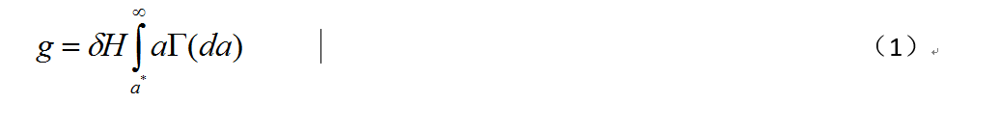
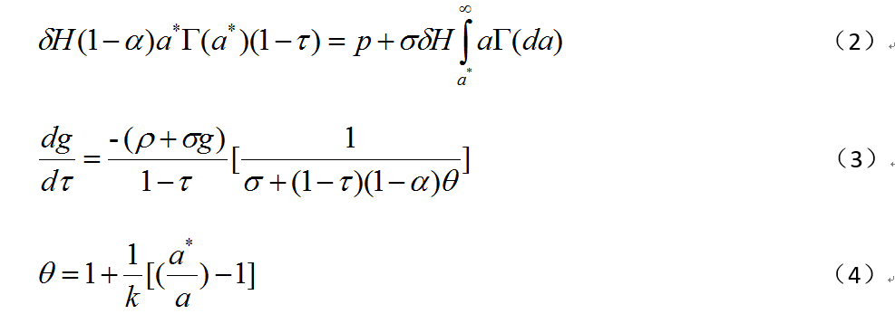
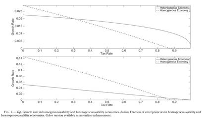
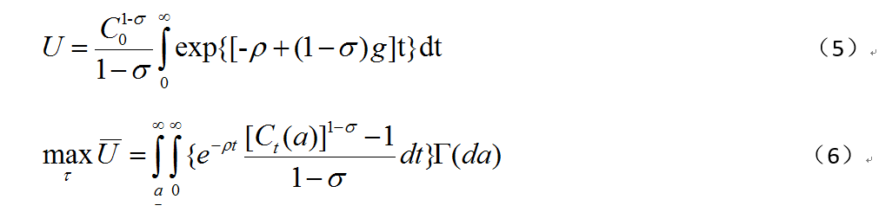

税率与增长的暧昧关系
原创 政观编辑部
政文观止Poliview
微信号 zhengwenguanzhi
功能介绍 从一群年轻人的视角出发，专业、专注、专解海内外比较政治经济研究的前沿佳作。
__发表于
比较政治学 121个
文献来源：Nir Jaimovich,Sergio Rebelo, ”Nonlinear Effects of Taxation on Growth”, J ournal of Political Economy, Vol 125, No 1, 2017
作者简介： Seth J. Hill，加州大学圣地亚哥分校政治学系助理教授；James Lo，曼海姆大学改革政治经济学中心博士后研究员；Lynn Vavreck，加州大学洛杉矶分校政治学与传播研究系助理教授；Jhon Zaller，加州大学洛杉矶分校政治学系教授。
对于现代国家而言，税收是不可或缺的，而税收政策则是不可怠慢的。公民如果不老实纳税，国家可以有一万种方式来制服你，但如果国家的税收政策谬之千里，那么历史也会有一万种方式让你衰落。因此，可以说，国家所制定的税收政策，与这个国家的发展息息相关。
那么，税收与发展有何种关系呢？从公共经济学的角度来看，这个问题一般转化为税率与经济长期增长的关系。
一方面，税率是一个国家税收体制的核心，因此具有极高的研究代表性。同时，税率常常与政策调整、选举活动紧密相关，所以在宏观分析时，又有本质上的内生性。相比较下，税制结构和税制效率一般表现为稳态（反映为不可观测的个体跨期固定效应）。故而作为外生变量处理，外部给定。因此，税率对于解释一个国家税制的合理性有着研究性的作用。
另一方面，增长是衡量发展的经典指标，在经典的宏观经济增长理论中，增长这个变量已经被充分的内生化，但是，对于税率是否会成为影响一国经济增长的原因，存在多种质疑意见。
比如，第一，税率不会影响长期经济增长，其只有水平效应而没有累积效应（Solow，Jones）；第二，税率不会影响长期经济增长，因为税收的效用差异在多部门中存在互相替代的非帕累托关系而被抵消（Lukas）；第三，税率不会影响长期经济增长，尽管存在数据上的相关性，但不稳定（Romer，Howitt）；第四，不同国家的宏观税负不同，但似乎并未带来彼此增长路径的不同。
以上的质疑都有数理模型和数据统计的支持，但是这些质疑并不是否认税率的影响，而是否认税率能够对长期增长带来实质影响。但事实真的如此的话，政府完全有理由把税率提高到100%，因为税率不会实质影响增长。因此，这些质疑意见多少存在缺陷。
总体而言，关于增长原因和动力的解释中，主要包括人口增长、人力资本的提升、资本积累、技术进步与扩散、制度创新、政府对产权的保护等。实际上，这些因素都可能和税率存在千丝万缕的联系，比如，资本积累必然和财产税有关，技术扩散必然和多国贸易间的关税有关，那么如果能够建构一种能实质影响增长的因素与税率间的模型，就很有可能依托这个中介因素，连接税率与增长的关系。
Nir Jaimovich与Rebelo两位长期研究国家为何增长的学者展开了这项工作。
第一步，作者在既有研究基础上，充分检验了税率与增长的关系。作者发现，无论是面板数据还是时间序列数据，二者的关系都不显著。税率的变化或许对短期的产出有影响，但对长期增长没有实质影响。
**
**
模型选择
第二步，作者建构了一个通过融合中介变量而影响增长的数理模型。那么选择何种中介变量就非常重要，作者认为，一方面这个中介变量首先必须是增长的内生变量，另一方面，这个变量的数据分布应该是偏态的（否则存在非帕累托变动），最后，这个变量可以被税率所内生化——即为税率的函数。
因此，作者选择了一个非常“Romerism”的增长模型来作为基础模型，搭建自己的模型，Romerism增长模型中影响增长的内生变量是人的创新能力。首先，增长表现为要素进步，要素进步可以简单分为技术进步和综合效率的提升，综合效率又可以进一步分解为规模效率和纯技术效率。综合效率的提升是收敛的，因此技术进步是长期增长的动力，而技术进步要靠创新驱动，因此一个社会平均创新能力是决定增长的关键因素。故而该模型影响增长的内生变量是为社会的创新能力。
其次，创新能力的分布是偏态的，从经验来看，各国人口创新能力曲线是右偏厚尾的。所以以这个变量来衡量的增长差异是可被观测的。
最后，该模型假设在任何一个时期，每个人都可以选择成为创新者还是劳动贡献者。如果选择劳动贡献者，则生产最终商品，而不会获得技术创新收益。而成为创新者，则独享创新资本回报。而在该模型中，是否创新被抽象为税率的函数，政府征收高额的资本所得税，会边际上减少人们选择成为创新者的可能，这会减少增长；若政府选择温和的税率，则或许存在一个最优税率来实现一个国家增长效用最大化。
因此，这个模型比较好的整合了税率与增长间的关系。作者所要做的就是推导出二者与中介变量所构建的效用模型，然后估测最优税率。
模型推导
作者的推导过程并不复杂，感兴趣的朋友可以查阅原文。这里罗列其中几个关键的式子。


从模型（4）可以发现，一个社会中，如果选择创新或者选择不创新有影响，那么一阶条件大于1，进而税率变动对增长的冲击较小；换言之，如果一个社会高度同质化，那么 =1，税率对增长的冲击较大。这个模型结果说明了两个问题，第一，税率对增长确实存在影响，但由于 和 的差异与一个国家人力资本禀赋状况、参数k（平均人力资本禀赋发散形态）
关系很大，故而税率对增长的影响可能是非线性的。因此，作者整理了美国过去两个时段的数据来说明（不同时段选择创新与否的边际回报不同）。

由图可见，第一，尽管税率调整的边际幅度一样，但不同区间的调整对增长的冲击效应不同。第二，税率的变动是通过影响社会人力资本禀赋结构的变化，来间接实现对增长的影响（交互性关系）。在社会高度异质化的情形中，税率的变化对增长的冲击效应较弱，而在相对同质化的社会中，这种冲击作用明显。因此，这或许能够回应另一个发展现象。即在后共产主义体制国家中，税率的轻微变动对增长的冲击效果是较为明显的，因此，对私人或者地方创新的税率激励能够带来更大的增长。但在自由民主国家中，税率的变动对增长的冲击相对微弱（滞后效果也是如此），因此对创新的激励虽然带来增长，但依靠减税的方式是作用较低的。因此，这就是为什么，不同国家在不同发展阶段，就算选择相同的税率政策，但增长效果却是千差万别的。
另一方面，也能看出，税率对增长的影响是非线性的。
模型深化
税率与增长的关系模糊不清，作者通过以上推导证明了这种关系为什么模糊不清，以及模糊不清的表现。但是问题又来了，在理想的民主国家中，税率是由选民投票决定的，也是由政府理性制定的。但是正如上文所说，创新能力的分布是偏态的，这意味着大部分选民是无法得到创新的边际回报的，他们只能享受与增长同步的工资回报。但是他们却能决定税率是多少。但另一方面税率却能够深刻影响创新者的创新行为和价值回报。这就产生一个有趣的问题，即选民的眼光是否长远？
也就是说，选民对税率的偏好是否是非理性的。或者说，税率的本质究竟是没有合作的博弈还是审慎博弈下的合作。
作者继续考察这个问题。作者将税率变为效用的内生变量，作者构建了一个中间选民效用的模型和政府效用模型。

可以非常清晰的看到，我们可以根据预算约束模型和横截性条件，加入拉格朗日乘子，得到最优效用的税率解。作者将数据代入，发现，中间选民最优效用的边际税率为35%，政府为31%。而根据既有数据发现，美国长期边际资本税率为30%，这说明大部分与创新无缘的选民很“聪明”的遥控了创新者的创新，从而借鸡生蛋收获增长回报。另一方面，政府更加“大度”的调整了选民与增长间的税率摩擦（4%左右），为了实现增长而压制了自己税收扩张的刚性。
但尽管如此，虽然三个数值差别不大，但哪怕.01的微弱税率变化也会带来很大的政策冲突。因此，其中的合作过程也好，博弈过程也好会非常复杂。但不管税率的决策机制怎么样，但税率的增长机制基本得到证实。即较低的税率能够促进创新，创新的提升带来增长，增长的获益不仅包括创新者（比如企业家），还包括大部分选民。
作者认为，美国“非常幸运”的选择了30%税率政策，这个税率的好处不仅能够在这个区间内最大效度实现增长，也能保证起码的再分配需要。但是，没有人告诉美国制定30%的税率，但事实却是如此，作者狡黠的总结认为，或许神赐美利坚的说法在科学上非常离谱，但博弈下民主却赐给了美国增长。但博弈的质量是会变化的，民主的效率也会变化。30%的税率不可能长期促进增长，税率的调整是偶然中的必然。
总结
作者认为，税率对增长的影响存在，但是非线性的，原因在于税率对不同经济环节的中间投入的影响是不同的，边际上是有差异的，因此很难根据这种中介因素判明税率与增长的稳定关系。但是，这不妨碍税率的制定能够实现帕累托改进。
对于一个国家，什么税率最优是仁者见仁、智者见智的问题，但能够自由的仁者行仁、智者行智的国家会有大概率成为增长的宠儿。
政观编辑部
感谢您的支持
微信扫一扫赞赏作者 __赞赏
已喜欢，对作者说句悄悄话
取消 __
发送给作者
发送
最多40字，当前共字
上一页 1/3 下一页
长按二维码向我转账
感谢您的支持
受苹果公司新规定影响，微信 iOS 版的赞赏功能被关闭，可通过二维码转账支持公众号。
预览时标签不可点
个
上一篇 下一篇
微信扫一扫
关注该公众号
微信扫一扫
使用小程序
： ， 。 视频 小程序 赞 ，轻点两下取消赞 在看 ，轻点两下取消在看